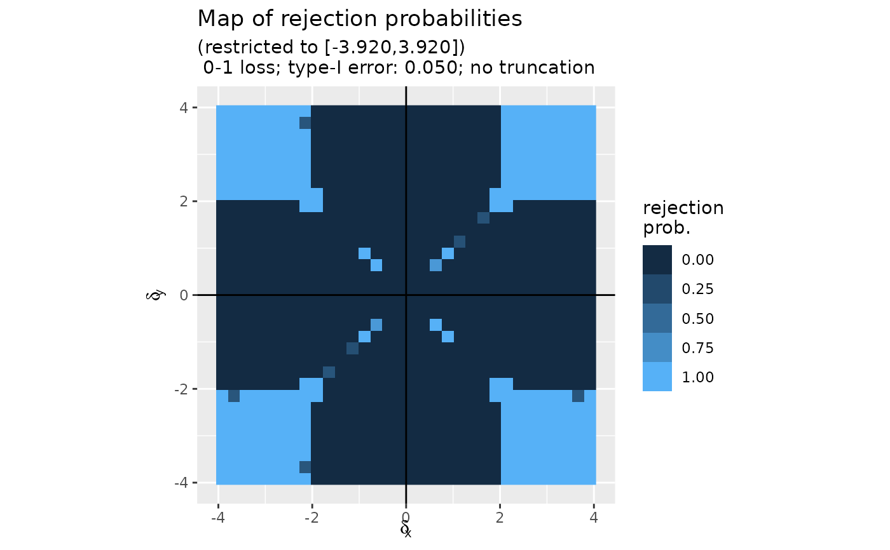

Plots the 'map' of rejection probabilities for the Bayes risk optimal test
plot.map.rejection.probabilities.RdPlots the 'map' of rejection probabilities for the Bayes risk optimal test of the composite null "\(\delta_x \times \delta_y=0\)" against its alternative "\(\delta_x \times \delta_y\neq 0\)" based on the test statistic in the real plane.
Usage
# S3 method for class 'map.rejection.probabilities'
plot(x, filename = NULL, return_fig = FALSE, ...)Value
Nothing unless 'return_fig' is set to 'TRUE', in which case the function returns the 'ggplot2' object.
Examples
map <- compute_map_rejection_probs(alpha = 0.05, K = 16, loss = "0-1")
plot(map)
